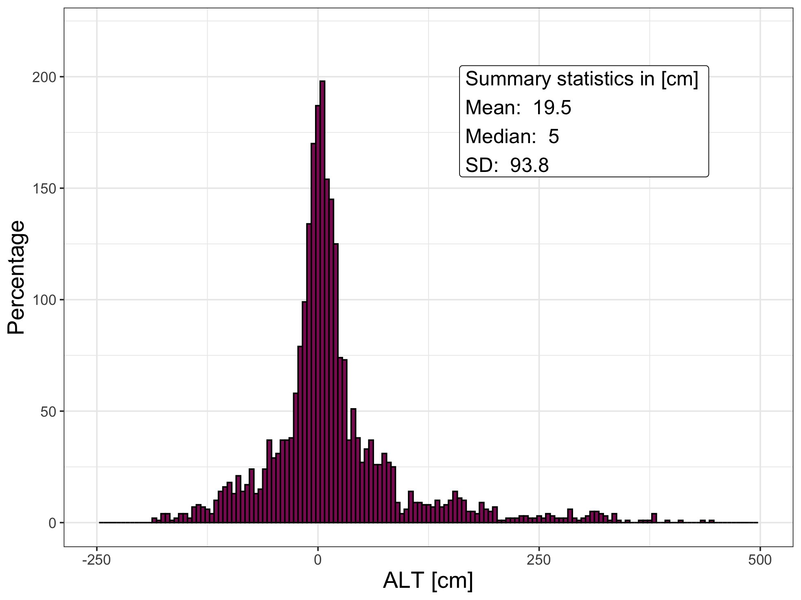
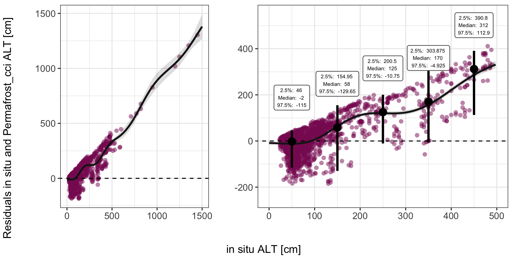
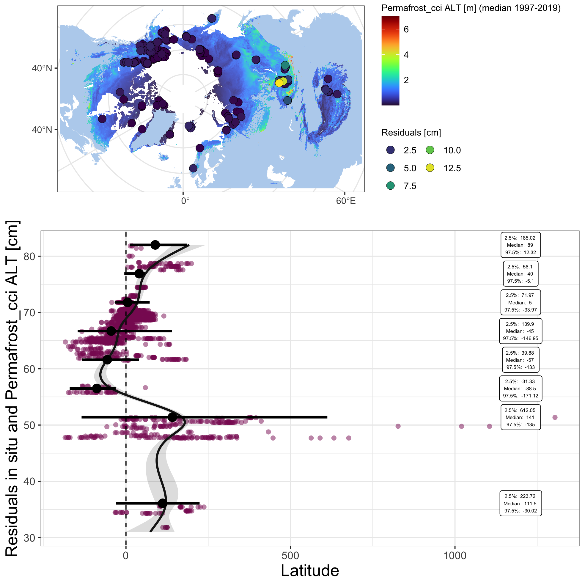

library(readxl)
library(ncdf4)
library(raster)
library(tidyverse)
library(ggforce)
library(grid)
library(mgcv)
library(sf)
sf::sf_use_s2(FALSE) subDat <- inSitu_alt %>% as_tibble() %>%mutate(ALT_Permafrost_cci = ALT_Permafrost_cci*100,
delta = Depth - ALT_Permafrost_cci)
png("figures/Figure_4.3.png", width = 20, height = 15, units = "cm", res = 250)
ggplot(NULL, aes(x)) +
geom_histogram(data = subDat, mapping = aes(x = delta), binwidth=5, position="dodge", fill = "maroon4", col = "black") +
geom_label(aes(x = 160, y = 180), size = 5,
label = paste("Summary statistics in [cm]", "\nMean: ", round(mean(subDat$delta, na.rm = T), 1),
"\nMedian: ", round(median(subDat$delta, na.rm = T), 1), "\nSD: ", round(sd(subDat$delta, na.rm = T), 1)),
hjust = 0) +
theme_bw() +
xlim(-250, 500) +
ylim(0, 220) +
labs(fill='', x = "ALT [cm]", y = "Percentage") +
theme(text = element_text(size=rel(4)),
legend.text = element_text(size=14)) ## Warning: Removed 9 rows containing non-finite values (stat_bin). ## Warning: Removed 2 rows containing missing values (geom_bar). dev.off() ## quartz_off_screen
## 2 Figure 4.3: Frequency distribution of residuals from the ALT in situ and Permafrost_cci matchup.
###################
#### Residuals ####
###################
predInterval <- function(x, newdat, lower = .025, upper = 0.975) {
model = x
p <- predict(model, newdat, type = "link", se.fit = TRUE)
upr <- p$fit + (2 * p$se.fit)
lwr <- p$fit - (2 * p$se.fit)
newdat$upr <- model$family$linkinv(upr)
newdat$lwr <- model$family$linkinv(lwr)
newdat$fit <- predict(model, newdat)
beta <- coef(model)
V <- vcov(model)
num_beta_vecs <- 10000
Cv <- chol(V)
nus <- rnorm(num_beta_vecs * length(beta))
beta_sims <- beta + t(Cv) %*% matrix(nus, nrow = length(beta), ncol = num_beta_vecs)
covar_sim <- predict(model, newdata = newdat, type = "lpmatrix")
linpred_sim <- covar_sim %*% beta_sims
invlink <- function(x) x
exp_val_sim <- invlink(linpred_sim)
y_sim <- matrix(rnorm(n = prod(dim(exp_val_sim)), mean = exp_val_sim, sd = summary(model)$scale),
nrow = nrow(exp_val_sim),
ncol = ncol(exp_val_sim))
out <- as.data.frame(t(apply(y_sim, 1, quantile, prob = c(lower, upper))))
names(out)[1:2] <- c("plwr", "pupr")
cbind(newdat, out)
}
model <- gam(delta ~ s(Depth), data = subDat)
newdat <- data.frame(Depth = seq(0, 1500, length = 200))
dat <- lapply(list(model), predInterval, newdat = newdat)
pl1 <- ggplot(NULL, aes(x, y)) +
geom_point(subDat, mapping = aes(x = Depth, y = delta), alpha = 0.5, shape = 16, col = "maroon4", size = 2) +
geom_abline(slope = 0, intercept = 0, linetype = "dashed") +
geom_ribbon(data = dat[[1]], mapping = aes(x = Depth, y = fit, ymin = lwr, ymax = upr), alpha = 0.15, fill = "grey10") +
geom_line(data = dat[[1]], mapping = aes(x = Depth, y = fit), col = "grey10", size = 1) +
theme_bw() +
labs(x = "", y = "") +
theme(text = element_text(size=rel(4)))
p <- c(0.025, 0.5, 0.975)
p_names <- map_chr(p, ~paste0(.x*100, "%"))
p_funs <- map(p, ~partial(quantile, probs = .x, na.rm = TRUE))
boxDat <- subDat %>% filter(Depth <= 500) %>%
mutate(groupD = cut(Depth, seq(0, 500, 100), labels = FALSE)) %>%
group_by(groupD) %>% summarize_at(vars(delta), funs(!!!p_funs)) ## Warning: `funs()` was deprecated in dplyr 0.8.0.
## Please use a list of either functions or lambdas:
##
## # Simple named list:
## list(mean = mean, median = median)
##
## # Auto named with `tibble::lst()`:
## tibble::lst(mean, median)
##
## # Using lambdas
## list(~ mean(., trim = .2), ~ median(., na.rm = TRUE)) names(boxDat) <- c("groupD", "lower", "median", "upper")
pl2 <- ggplot(NULL, aes(x, y)) +
geom_point(subDat, mapping = aes(x = Depth, y = delta), alpha = 0.5, shape = 16, col = "maroon4", size = 2) +
geom_abline(slope = 0, intercept = 0, linetype = "dashed") +
geom_ribbon(data = dat[[1]], mapping = aes(x = Depth, y = fit, ymin = lwr, ymax = upr), alpha = 0.15, fill = "grey10") +
geom_line(data = dat[[1]], mapping = aes(x = Depth, y = fit), col = "grey10", size = 1) +
geom_segment(boxDat, mapping = aes(x = ((groupD -1) * 100) + 50, xend = ((groupD -1) * 100) + 50, y = lower, yend = upper), size = 1.2) +
geom_point(boxDat, mapping = aes(x = ((groupD -1) * 100) + 50, y = median), size = 4, shape = 16) +
geom_label(boxDat, mapping = aes(x = ((groupD -1) * 100) + 50, y = median + 190,
label = paste("2.5%: ", upper, "\nMedian: ", median, "\n97.5%: ", lower)), size = 2) +
theme_bw() +
xlim(0,500) + ylim(-250, 550) +
labs(x = "", y = "") +
theme(text = element_text(size=rel(4)))
png("figures/Figure_4.4.png", width = 20, height = 10, units = "cm", res = 250)
gridExtra::grid.arrange(pl1, pl2, nrow =1, widths = c(1,1.5), bottom = "in situ ALT [cm]", left = "Residuals in situ and Permafrost_cci ALT [cm]") ## Warning: Removed 17 rows containing missing values (geom_point). ## Warning: Removed 133 row(s) containing missing values (geom_path). dev.off() ## quartz_off_screen
## 2 Figure 4.4: Residuals of in situ ALT measurements and Permafrost_cci ALT simulations over ALT.
maxTab <- subDat %>% group_by(Name) %>% mutate(maxRes = max(abs(delta)/100, na.rm = T)) %>%
filter(!duplicated(Name)) %>% arrange((maxRes))
crds_pts <- st_as_sf(maxTab, coords = c("Longitude", "Latitude")) %>% st_set_crs(4326) %>%
st_transform("+proj=stere +lat_0=90 +lat_ts=71 +lon_0=0 +x_0=0 +y_0=0 +datum=WGS84 +units=m +no_defs") %>% st_coordinates()
pl1 <-map +
geom_raster(data=rast_df, aes(x=x, y=y, fill=value), alpha=0.8) +
viridis::scale_fill_viridis(option = "H") +
labs(fill = "Permafrost_cci ALT [m] (median 1997-2019)") +
ggnewscale::new_scale_fill() +
geom_point(data = data.frame(crds_pts, maxRes = maxTab$maxRes),
aes(x = X, y = Y, fill = maxRes), alpha = 1, shape = 21, stroke = 0.2, size = 3.5) +
scale_fill_viridis_c() +
labs(fill = "Residuals [cm]", x = "", y = "") +
theme(legend.background = element_rect(fill = "white"),
legend.text = element_text(size=rel(0.8)),
legend.title = element_text(size=rel(0.8))) +
guides(fill=guide_legend(ncol=2))
model <- gam(delta ~ s(Latitude), data = subDat)
newdat <- data.frame(Latitude = seq(31, 82, length = 200))
dat <- lapply(list(model), predInterval, newdat = newdat)
grL <- data.frame(gr = 1:11, groupL = seq(31, 82, length = 11))
boxDat <- subDat %>% mutate(gr = cut(Latitude, grL$groupL, labels = FALSE)) %>%
group_by(gr) %>% summarize_at(vars(delta), funs(!!!p_funs)) %>% left_join(grL) %>%
mutate(grL = groupL + median(diff(grL$groupL))) ## Joining, by = "gr" names(boxDat) <- c("groupD", "lower", "median", "upper", "a", "groupL")
pl2 <- ggplot(NULL, aes(x, y)) +
geom_point(subDat, mapping = aes(x = Latitude, y = delta), alpha = 0.5, shape = 16, col = "maroon4", size = 2) +
geom_abline(slope = 0, intercept = 0, linetype = "dashed") +
geom_ribbon(data = dat[[1]], mapping = aes(x = Latitude, y = fit, ymin = lwr, ymax = upr), alpha = 0.15, fill = "grey10") +
geom_line(data = dat[[1]], mapping = aes(x = Latitude, y = fit), col = "grey10", size = 1) +
geom_segment(boxDat, mapping = aes(x = groupL, xend = groupL, y = lower, yend = upper), size = 1.2) +
geom_point(boxDat, mapping = aes(x = groupL, y = median), size = 4, shape = 16) +
geom_label(boxDat, mapping = aes(x = groupL, y = rep(1200, nrow(boxDat)),
label = paste("2.5%: ", round(upper,2), "\nMedian: ", round(median,2), "\n97.5%: ", round(lower,2))), size = 1.7) +
theme_bw() +
labs(x = "Residuals in situ and Permafrost_cci ALT [cm]", y = "Latitude") +
coord_flip() +
theme(text = element_text(size=rel(4)))
png("figures/Figure_4.5.png", width = 20, height = 20, units = "cm", res = 250)
gridExtra::grid.arrange(pl1, pl2, nrow =2, heights = c(1, 1.6)) ## Warning: Raster pixels are placed at uneven horizontal intervals and will be
## shifted. Consider using geom_tile() instead. ## Warning: Raster pixels are placed at uneven vertical intervals and will be
## shifted. Consider using geom_tile() instead. ## Warning: Removed 910 rows containing missing values (geom_raster). dev.off() ## quartz_off_screen
## 2